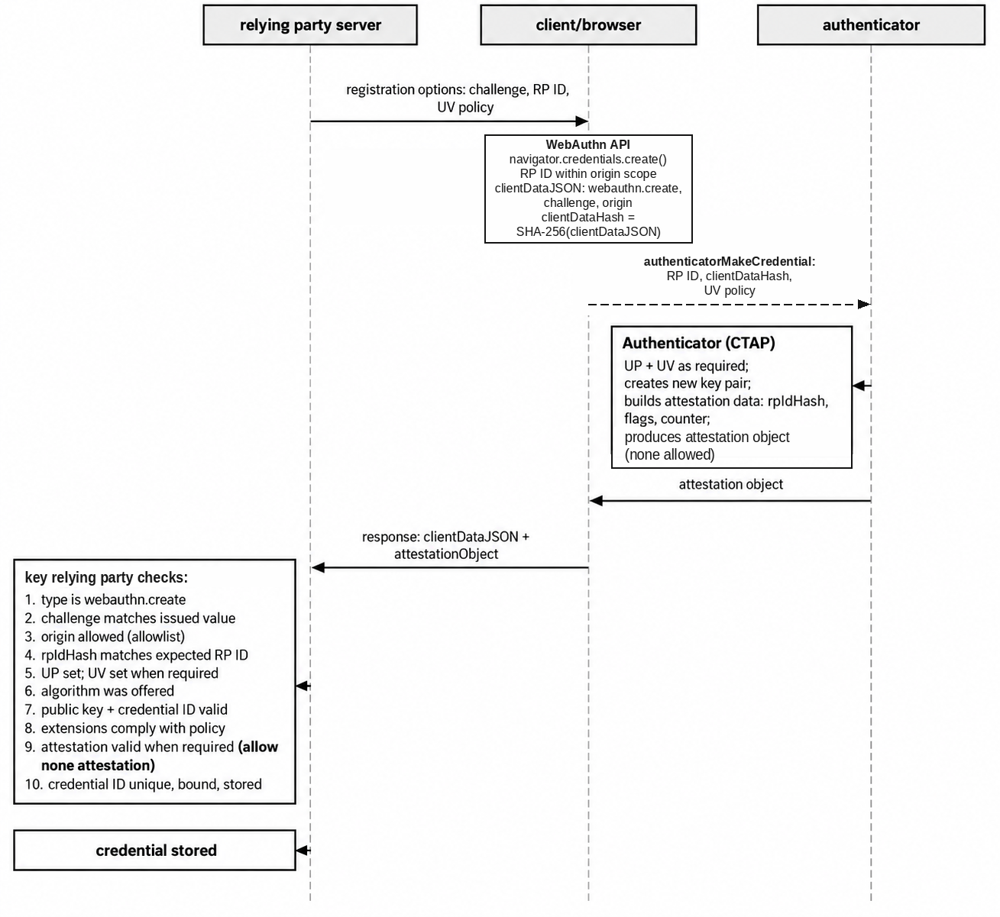
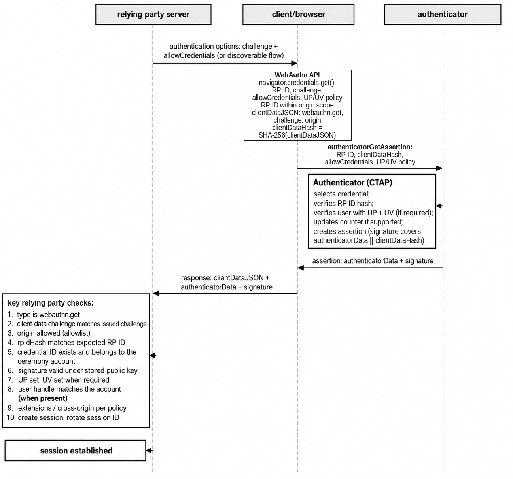

Passkey Security Cheat Sheet¶
Introduction¶
Passkeys are discoverable WebAuthn public key credentials used for passwordless authentication without sending a shared secret to the application. Web applications exercise passkeys through WebAuthn. The authenticator keeps the private key and the relying party stores a public key. A passkey is scoped to a relying party identifier (RP ID), which provides phishing resistance when the ceremony and server-side verification are implemented correctly.
This cheat sheet is for developers who build the WebAuthn relying-party side of passkey registration, authentication, credential management, and account recovery. Its scope includes passkeys used with platform and roaming authenticators, including security keys that support discoverable credentials, and both synced and device-bound passkeys. Legacy FIDO U2F/CTAP1 second-factor credentials are outside this passkey scope. The main recommendations are:
- Use a maintained WebAuthn server library and validate every required ceremony field on the server.
- Bind registration to the intended account and require recent authentication before changing passkeys.
- Treat user presence (UP) and user verification (UV) as different security properties.
- Design credential management and recovery with the same care as authentication.
- Support more than one authenticator so that the loss of one device does not force a weak recovery path.
Understand the Security Model¶
Components and Terms¶
- The relying party (RP) is the application that registers and authenticates users.
- The client is the browser or other software that calls the WebAuthn API.
- The authenticator creates credentials and signs authentication assertions. It can be built into a device or be a separate roaming authenticator.
- The WebAuthn/FIDO2 protocol spans the RP, client, and authenticator. WebAuthn is the web-facing API used by RPs, while CTAP handles communication between clients and roaming authenticators.
- A passkey is a discoverable WebAuthn credential used for passwordless authentication. It may be held by a platform or roaming authenticator, and it may be device-bound or synced between devices by a credential provider.
- The credential ID identifies a credential to the RP. The corresponding private key remains under authenticator control.
- The user handle is an opaque RP-generated identifier for an account. It is not a username or email address.
- User presence (UP) shows that a person interacted with the authenticator.
- User verification (UV) shows that the authenticator locally verified the user, for example with a PIN or biometric.
Do not treat UP and UV as equivalent. Require UV when the passkey is expected to satisfy a multi-factor or other high-assurance authentication policy. A passkey is not automatically multi-factor merely because an authenticator supports UV; the RP must request UV and verify the returned UV flag.
Security Properties and Limits¶
WebAuthn credentials are scoped to an RP, and the signed response includes a hash of that RP ID. The client data also binds the response to the web origin and ceremony challenge. Correct verification therefore gives the RP phishing resistance, verifier-name binding, and replay resistance.
These properties do not protect every part of the account lifecycle. Passkeys do not by themselves prevent:
- A compromised authenticated session from adding an attacker-controlled passkey.
- An insecure recovery process from bypassing passkey authentication.
- Server-side credential records from being associated with the wrong account.
- Application code, authorization, or session-management vulnerabilities.
- Compromise of a device, authenticator, or account used to synchronize passkeys.
Apply the controls in the Authentication Cheat Sheet, Session Management Cheat Sheet, and Transaction Authorization Cheat Sheet to the surrounding application.
Choose the RP ID Carefully¶
An RP ID determines where a credential can be used. Use the narrowest stable domain that covers the intended application. Do not use a registrable parent domain merely to share credentials with unrelated subdomains. The WebAuthn specification discusses the security implications of the RP ID and origin relationship; compromise of an origin within the RP ID scope may affect the security of that RP deployment.
The server must use the same expected RP ID during registration and authentication. Maintain an explicit allowlist of permitted origins, including scheme, host, and port where applicable. Do not construct an expected origin from an untrusted request header.
Native app origins differ by platform. Apple's native passkey API reports an HTTPS origin formed from https:// and the RP ID, validated against the app's Associated Domains. The origin an Android app reports is a string such as android:apk-key-hash:<hash>, derived from the app signing certificate, and both platforms decide whether an app may use your RP ID from an association file that you host: /.well-known/assetlinks.json on Android and the webcredentials entries in /.well-known/apple-app-site-association on Apple platforms (see the RP ID and app origins overview). The server must match each expected origin against its allowlist as an explicit entry, never a pattern. Treat both association files as part of the RP attack surface with the same change control as the origin allowlist. An overly broad association can authorize unintended apps to use RP-scoped credentials. A permissive server origin allowlist weakens response verification; it does not by itself bypass the platform's app-association checks or give an app access to a user's passkey.
WebAuthn is restricted to secure contexts. Serve registration, authentication, and credential-management pages over HTTPS and protect them against script injection. Avoid cross-origin WebAuthn in embedded frames unless it is an intentional, reviewed design using the required Permissions Policy and origin validation.
Use a Maintained Library¶
Do not implement CBOR parsing, COSE key handling, attestation validation, or assertion verification yourself. Use a maintained server-side WebAuthn library that implements the W3C relying-party verification steps. Keep it updated and include successful and failing registration and authentication ceremonies in automated tests.
The library does not make account workflows safe automatically. The application remains responsible for issuing and consuming challenges, choosing the expected RP ID and origins, binding ceremonies to the correct session and account, enforcing UV policy, and managing credential lifecycle events.
Secure Passkey Registration¶
Establish an Authorized Account Context¶
Registration attaches a new authenticator to an account and must be treated as a sensitive account change.
- For an existing account, require a recently authenticated session and reauthenticate the user before adding a passkey. Do not rely only on possession of a long-lived session cookie.
- For a new account, bind the ceremony to the verified account-creation transaction. Do not allow a client-supplied account identifier to select a different account.
- Protect the registration initiation and completion endpoints against cross-site request forgery as described in the Cross-Site Request Forgery Prevention Cheat Sheet.
- Apply rate limits and log failed and successful enrollment attempts.
Generate and Bind Registration Options¶
Generate the registration challenge with a cryptographically secure random number generator. The WebAuthn security considerations require at least 16 random bytes; expire it promptly and accept it only once. Store server-side state that binds the challenge to:
- The registration ceremony type.
- The authenticated session and intended account.
- The expected RP ID and origin policy.
- The intended user-verification and attestation policy.
- An expiration time.
Do not accept a challenge issued for authentication as a registration challenge, or a challenge issued for one account in a ceremony for another account. Invalidate the challenge whether the ceremony succeeds or fails in a terminal way.
Generate a stable, opaque user handle that contains no username, email address, or other personally identifying information, following the WebAuthn user-handle privacy guidance. A user handle must identify one account within the RP and must not be reassigned to another account.
Include the account's existing credential IDs in excludeCredentials when possible. This improves the user experience by discouraging duplicate registration, but the server must still enforce credential uniqueness.
Verify the Registration Response¶
The following diagram summarizes the key checks and which party performs them.

Follow the WebAuthn registration verification procedure through the selected library. At minimum, ensure that the server verifies:
- The client data type is
webauthn.create. - The returned challenge exactly matches the issued challenge.
- The origin is an exact member of the RP's allowlist.
- The RP ID hash matches the expected RP ID.
- The UP flag is set and the UV flag is set when UV was required.
- The public-key algorithm is one the RP offered and permits.
- The credential public key and credential ID are structurally valid.
- Any requested extensions are processed according to RP policy.
- Attestation is verified when the RP's policy requires it.
Store the credential only after all checks succeed. Associate it with the account from the server-side ceremony state, never an account identifier returned by the client. Enforce credential ID uniqueness across the RP and make the account association change auditable.
Store the credential ID, public key, user handle association, algorithm, relevant transports, creation time, a user-visible name, and the authenticator data needed by the library. Store backup eligibility and backup state when returned, but do not expose those values as proof that a particular provider or device is trustworthy.
Minimize Attestation¶
Most public-facing applications should use no attestation and should not restrict users to a list of authenticator models. WebAuthn documents both attestation limitations and attestation privacy considerations; attestation does not prove that an authenticator will remain uncompromised.
Use attestation only when a documented enterprise or regulatory requirement justifies enforcing authenticator provenance or properties. If attestation is required:
- Define acceptable formats, trust anchors, metadata, and failure behavior.
- Validate the complete attestation chain and relevant status information.
- Plan for metadata and trust-anchor updates.
- Provide a reviewed exception or recovery process that does not silently remove the policy.
Secure Passkey Authentication¶
Generate and Bind Authentication Options¶
Generate a fresh, unpredictable challenge for every authentication ceremony. Bind it to the ceremony type, expected RP ID, origin policy, UV requirement, session or transaction context, and expiration time. Consume it once.
For account-first authentication, send only the credential IDs registered to the selected account in allowCredentials. Use generic responses and consistent behavior so that the account selection step does not disclose whether an account exists.
For username-less authentication, omit allowCredentials and use discoverable credentials. After verification, use the returned user handle and credential ID to locate the server-side credential record. Require both values to resolve to the same account; do not trust a display name or other client-provided identity claim.
Conditional mediation can improve passkey discovery and coexist with password fields. Treat it as another way to start the same authentication ceremony, not as a different verification policy.
Verify the Authentication Response¶
The following diagram summarizes the key checks and which party performs them.

Follow the WebAuthn assertion verification procedure through the selected library. At minimum, ensure that the server verifies:
- The client data type is
webauthn.get. - The challenge exactly matches an unexpired, unused authentication challenge.
- The origin is an exact member of the RP's allowlist.
- The RP ID hash matches the expected RP ID.
- The credential ID exists and belongs to the account selected by the verified ceremony context.
- The assertion signature is valid under the stored public key.
- The UP flag is set and the UV flag is set when required by policy.
- The returned user handle, when present, matches the credential's account.
- Extension outputs and cross-origin indicators comply with RP policy.
Create an authenticated application session only after every required check succeeds. Rotate the session identifier at authentication and apply the controls in the Session Management Cheat Sheet.
Handle Signature Counters Conservatively¶
A non-increasing signature counter can signal that an authenticator may be cloned, malfunctioning, or affected by out-of-order assertion processing. The WebAuthn signature counter considerations explain why it is not a universal clone-detection mechanism. Some authenticators do not implement a counter, and a synced credential may be used from multiple authenticator instances whose counter behavior is not strictly monotonic.
When a nonzero counter does not increase as expected, record the event and evaluate it with other account-risk signals. Do not automatically lock out every user solely because of a counter anomaly. Follow the selected library's guidance and document the RP's response policy.
Use Safe Failure Behavior¶
Return generic authentication errors that do not distinguish an unknown account, unknown credential, failed signature, or policy rejection. Keep externally visible response timing as consistent as practical. Rate-limit attempts by account and relevant network or device signals without creating a trivial account-lockout denial of service.
A failed passkey ceremony must not silently fall back to a weaker method. Adversary-in-the-middle phishing does not defeat a correctly verified passkey ceremony; it steers the user to whatever fallback is still enabled, and NIST SP 800-63B-4 Section 3.2.5 states that authenticators involving manual entry of an authenticator output, such as OTP and out-of-band codes, are not phishing-resistant. If a fallback exists, make it a deliberate, logged, policy-documented path rather than the default error handling, and follow the MFA Downgrade Attacks guidance.
Log enough structured information to investigate failures, but never log challenges, full credential responses, session identifiers, or unnecessary user-identifying data. The Logging Cheat Sheet provides general logging guidance.
Protect the Credential Lifecycle and Recovery¶
Credential Management¶
Provide an authenticated credential-management page where users can view and manage their passkeys. Show a user-chosen name, creation date, and last-used date rather than exposing raw credential IDs.
- Require recent reauthentication before adding or removing a passkey, changing recovery methods, or disabling the last strong authenticator.
- Allow users to register more than one authenticator.
- Notify the user through an existing trusted channel when a passkey is added or removed.
- Record enrollment, use, renaming, and revocation as security events.
- Revoke a credential immediately on the server when the user removes it or reports compromise.
- Confirm that at least one usable authentication or recovery method remains before removing the final passkey.
Do not silently reassign a credential record to a different account. Database migrations and administrative changes to credential-to-account mappings require integrity controls, authorization checks, and audit logs. Treat an unexpected duplicate credential ID as an error requiring investigation.
Where supported, WebAuthn signal methods can help a credential provider reconcile its local state after an RP deletes credentials or updates user details. These signals improve consistency but do not replace server-side revocation.
Account Recovery and Bootstrap¶
The effective security of a passkey account is limited by its weakest recovery route. Prefer recovery based on another already-registered passkey, a separately secured recovery code, or a high-assurance identity process appropriate to the application's risk.
- Encourage users to register multiple authenticators before one is lost.
- Protect recovery codes as authentication secrets, store them securely, make them single-use, and let users regenerate them.
- Apply rate limits, risk checks, notifications, and additional review to recovery attempts.
- Do not let email or SMS recovery silently bypass a stronger authentication policy for high-risk accounts.
- After recovery, rotate sessions, review or revoke existing credentials as appropriate, and notify the user.
- Apply a delay or additional verification before high-impact actions when recovery indicates elevated takeover risk.
For more detail, see the Forgot Password Cheat Sheet and the recovery guidance in the Multifactor Authentication Cheat Sheet.
Synced and Device-Bound Credentials¶
Synced passkeys improve availability by making a credential usable on more than one device. Their security also depends on the credential provider's account protection, device enrollment, synchronization, and recovery controls. Device-bound credentials can support policies that require the key to remain on a particular authenticator, but require an availability and replacement plan.
Choose policy according to the application's threat model:
- Public-facing applications should generally support synced passkeys and provide users with secure options for additional authenticators and recovery.
- Enterprise or high-assurance applications may require managed, device-bound authenticators and attestation when the operational controls justify the reduced interoperability.
- Use backup eligibility and backup state as risk and policy inputs where appropriate. Do not treat them as user-verification results or as proof of a specific sync provider.
- Do not assume a synced passkey can meet every assurance level. For example, NIST does not allow syncable authenticators at Authentication Assurance Level 3 (AAL3).
Deployment and Review Checklist¶
Use this checklist together with the W3C registration and authentication verification procedures.
Server and Protocol¶
- Use a maintained WebAuthn server library and keep it updated.
- Generate cryptographically random, single-use, expiring challenges of at least 16 bytes.
- Bind each challenge to its ceremony, account or session context, RP ID, origin, and policy.
- Maintain an exact origin allowlist and a documented RP ID.
- List native app origins explicitly and change-control the
assetlinks.jsonandapple-app-site-associationfiles together with the allowlist. - Verify type, challenge, origin, RP ID hash, UP, required UV, credential ownership, and signature.
- Store public keys and credential metadata safely and enforce credential ID uniqueness.
- Treat counters as risk signals rather than universal clone detection.
- Test registration and authentication with supported browsers and authenticators.
Account Workflows¶
- Require recent authentication for passkey enrollment, removal, and recovery changes.
- Bind new credentials to the server-selected account.
- Support multiple authenticators and immediate server-side revocation.
- Notify users of credential lifecycle changes and retain useful audit events.
- Make recovery commensurate with the security of passkey authentication.
- Use generic error messages and protect account-first flows from enumeration.
- Never let a failed passkey ceremony silently fall back to a non-phishing-resistant method.
Privacy and Operations¶
- Keep user handles opaque and free of personally identifying information.
- Avoid attestation unless a documented requirement justifies it.
- Do not expose raw credential IDs in user interfaces, URLs, or logs.
- Minimize stored authenticator metadata and restrict access to it.
- Monitor registration, authentication, recovery, and administrative mapping changes.
- Document incident procedures for a compromised authenticator, sync account, RP origin, or WebAuthn library.